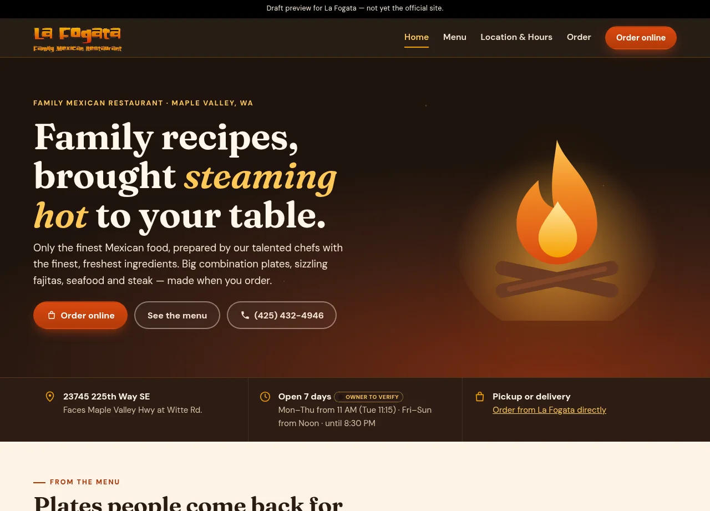

01 / Problem
The product challenge
The owner’s homepage had been hijacked and was showing gambling links, so a search for the restaurant no longer showed the menu, the hours, or a way to order.
Restaurant / Rescue rebuild
A sample rebuild for a Maple Valley family Mexican restaurant. It restores a normal restaurant page after the owner’s homepage was hijacked with gambling links, and it points ordering to the restaurant’s existing Menufy site.

The experience at a glance
The preview leads with the food, the Maple Valley address, and a way to order. Online ordering points to the Menufy site the restaurant already uses.
Visit the preview ↗This case study describes a draft pitch preview and the design decisions visible in that preview. It is not the business’s official site, and it does not claim the business hired this work or published it on their domain.
01 / Problem
The owner’s homepage had been hijacked and was showing gambling links, so a search for the restaurant no longer showed the menu, the hours, or a way to order.
02 / Design intent
Put the restaurant back in front—what it serves, where it is, when it is open—and send online orders to Menufy.
03 / Key decisions
04 / Interaction & usability
Order, menu, and phone are in the hero, so a visitor can act without reading about the old homepage. That homepage is context for the rebuild, not the content of the new page.
05 / Tools & skills
Information architecture, rebuilding a usable restaurant page, menu hierarchy, ordering handoff, responsive layout, and front-end implementation.
06 / What I’d improve next
The preview can stay a pitch until the restaurant chooses what to do with the old domain. Nothing here assumes that switch has happened.
Open the preview ↗Next project / Let’s work together